Outfits, give-all, replayable bosses and a brutal Leon HARDCORE fight — without ever touching your real save.
The mod never modifies your original save. Here is how it works:
DemoTweaks_Saves.Where are the saves?
%USERPROFILE%\AppData\LocalLow\KONAMI\Castlevania Belmont's Curse\
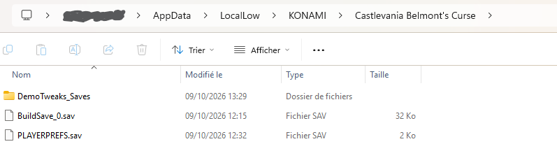
BuildSave_0.sav = your real save (never touched) ·
DemoTweaks_Saves = the mod's copy. Delete that folder to start again from a fresh copy of your real save.CustomSkins (template + example included).Takes 2 minutes. Everything is included (BepInEx + the mod), nothing else to download.
Download Castlevania Belmont's Curse Demo Mod.zip with the button at the top of this page.
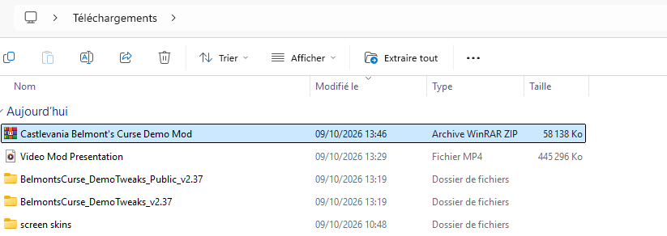
Right-click the archive → Extract all (or use WinRAR / 7-Zip). You get a folder with the same name.
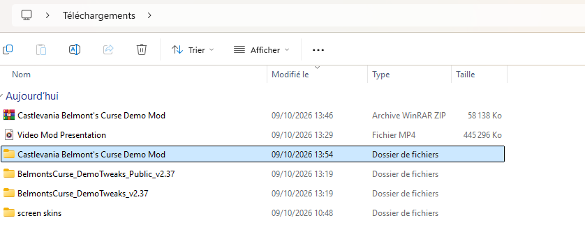
Inside, you should see 5 items: dotnet, BepInEx,
.doorstop_version, doorstop_config and winhttp.dll.
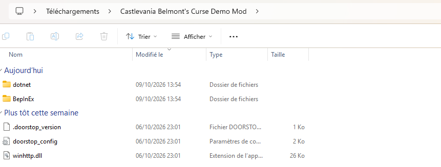
In Steam: right-click Castlevania: Belmont's Curse Demo → Manage → Browse local files. It usually is:
C:\Program Files (x86)\Steam\steamapps\common\Castlevania Belmont's Curse Demo
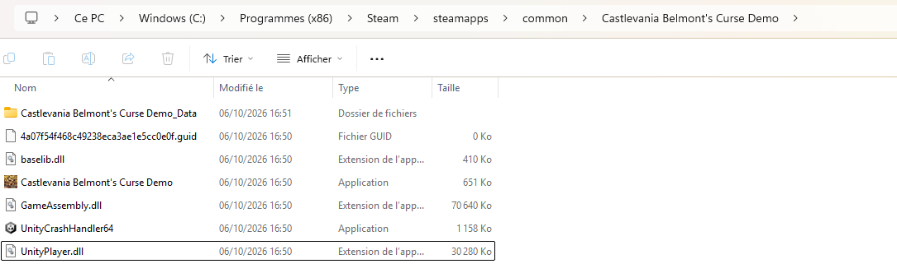
Select all 5 items from the extracted folder, copy them (Ctrl+C)…
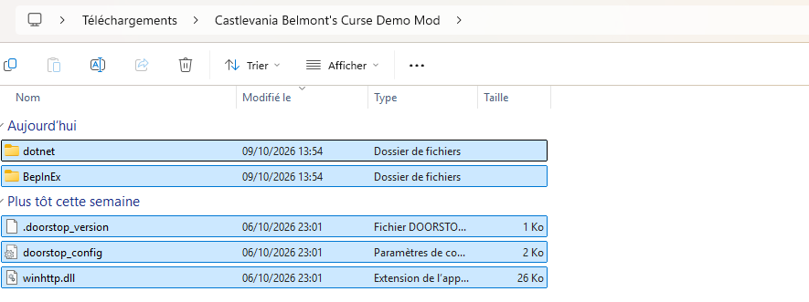
…and paste them (Ctrl+V) in the game folder, right next to Castlevania Belmont's Curse Demo.exe.
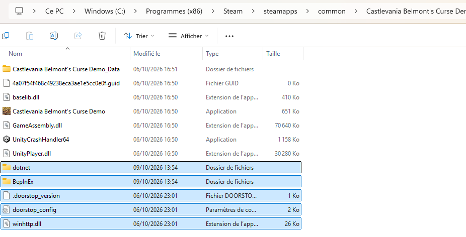
winhttp.dll must be in the same folder as the game's .exe.That's it! Load your save and press F1, F3, F4 or F5.
Inside the BepInEx folder, the mod itself lives in
BepInEx\plugins\BelmontsCurse.DemoTweaks:
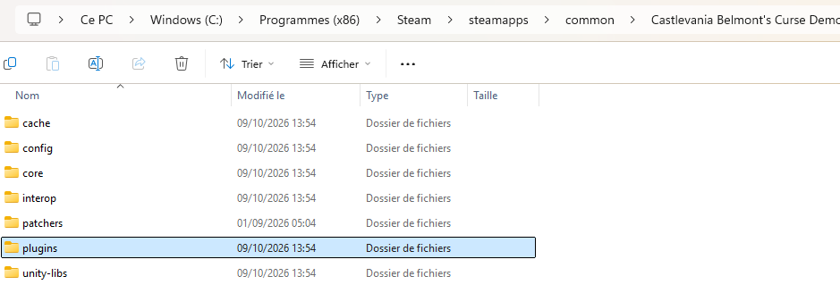
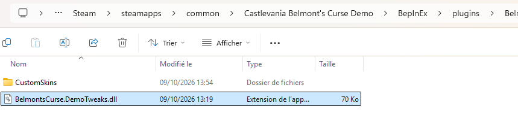
BelmontsCurse.DemoTweaks.dll = the mod · CustomSkins = your custom outfits.Just move BelmontsCurse.DemoTweaks.dll out of
BepInEx\plugins\BelmontsCurse.DemoTweaks — for example one folder up, into BepInEx.
The game then loads your original save. Put the file back to get your modded game back.
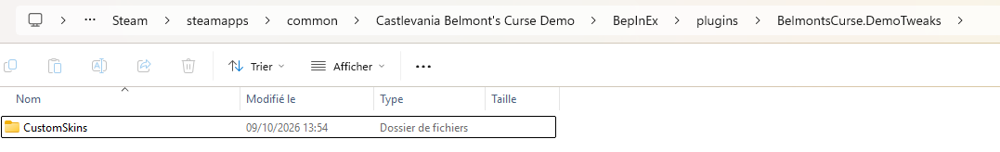
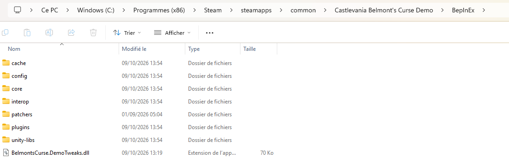
BepInEx, ready to be put back.Delete the 5 items you copied (dotnet, BepInEx, .doorstop_version,
doorstop_config, winhttp.dll) from the game folder. Your original save is untouched.
BepInEx\LogOutput.log.Check that the 5 items are directly in the game folder (next to the .exe), not in a sub-folder,
and that you launched the demo from Steam. Then load a save before pressing the keys.
Normal: BepInEx prepares its files once (2–3 minutes max). Don't close the game.
Delete the DemoTweaks_Saves folder (see Your save). The mod will make a fresh copy on the next launch.
It's a single-player demo and the mod blocks achievements while it is active. Your real save is never modified.